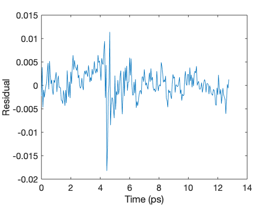
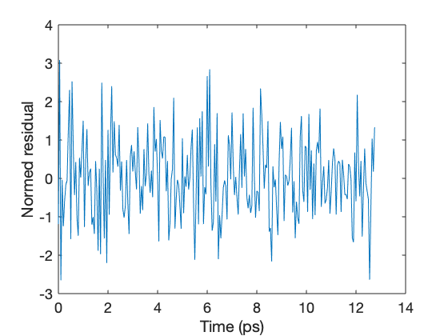
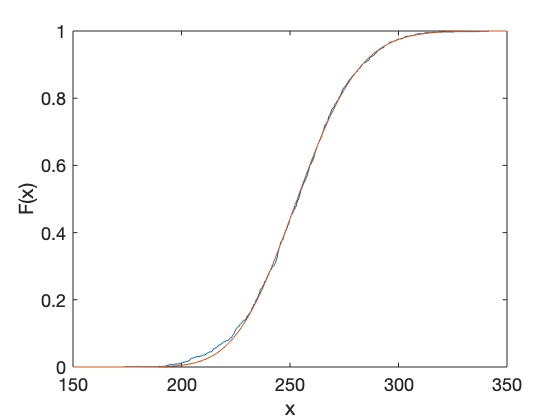

Test procedure for producing normalized residuals
Contents
Preliminaries
Set path
curpath = path; curDir = fileparts(mfilename('fullpath')); fs = strfind(curDir,filesep); topDir = fullfile(curDir(1:fs(end))); libDir = fullfile(curDir(1:fs(end)),'lib'); if ~contains(curpath,libDir) addpath(libDir); end
Number of Monte Carlo runs
nMC = pow2(10); Init = cell(nMC,1);
Initialize RNG
rng('default')
Set initial parameters
Pulse measurement parameters
T=.05; % sampling time [ps] N=256; % number of sampled points t0=N*T/3; % pulse center [ps] f = fftfreq(N,T); % discrete frequency vector w = 2*pi*f; % discrete angular frequency vector
Noise parameters
sigma_alpha=1e-3; % amplitude noise [units of time-domain peak] sigma_beta=1e-2; % multiplicative noise [dimensionless] sigma_tau=1e-3; % time base noise [ps] sigma = [sigma_alpha; sigma_beta; sigma_tau];
Transfer function definition and parameters
d = 20e-9; % Film thickness [m] n = 3.4; % Substrate refractive index sigma0 = 1e7; % DC conductivity [1/(Ohm m)] tau = 1; % Momentum relaxation rate [ps] gamma = d*SI.Z0/(n+1); tfun = @(theta,w) 1./(1 + gamma*theta(1)./(1 -1i*w*theta(2))); theta0 = [sigma0; tau]; % Initial parameter vector Np = length(theta0);
Generate time array and two ideal pulses, y1 and y2
Use THZGEN to produce reference pulse y1 and time vector t, then use TDTF to create the ideal transformed pulse.
[y1,t]=thzgen(N,T,t0); y2 = tdtf(tfun,theta0,N,T)*y1;
Generate sets of noisy pulses, yn1 and yn2
yn1 = zeros(N, nMC); yn2 = zeros(N, nMC); Vy1 = diag(noisevar(sigma, y1, T)); Vy2 = diag(noisevar(sigma, y2, T)); iVy1 = diag(1./noisevar(sigma, y1, T)); iVy2 = diag(1./noisevar(sigma, y2, T)); for jMC=1:nMC yn1(:,jMC) = mvnrnd(y1,Vy1)'; yn2(:,jMC) = mvnrnd(y2,Vy2)'; end
Construct LSQ problem structure
LSQFit.x0 = theta0; LSQFit.lb = []; LSQFit.ub = []; LSQFit.solver = 'lsqnonlin'; LSQFit.options = optimoptions('lsqnonlin',... 'Display','off',... 'UseParallel',true);
Initialize timer
tic
LSQ parameter estimates
pLSQ = zeros(Np,nMC); muLSQ = zeros(N,nMC); resnormLSQ = zeros(1,nMC); residualLSQ = zeros(N,nMC); DiagnosticLSQ = struct('exitflag',Init,... 'jacobian',Init); for jMC=1:nMC sigmayn1 = noiseamp(sigma, yn1(:,jMC), T); sigmayn2 = noiseamp(sigma, yn2(:,jMC), T); LSQFit.objective = @(theta) ... costfunlsq(tfun,theta,yn1(:,jMC),yn2(:,jMC),... sigmayn1,sigmayn2,w); [p, resnormLSQ(jMC), residualLSQ(:,jMC),... DiagnosticLSQ(jMC).exitflag,~,~,... DiagnosticLSQ(jMC).jacobian] = lsqnonlin(LSQFit); p = p(:); pLSQ(:,jMC) = p; str = ['LSQ progress: ', num2str(100*jMC/nMC,'%05.1f')]; bsp = repmat('\b',1,length(str)); wht = repmat(' ',1,length(str)); if jMC==1 fprintf(1,wht) end fprintf(1, [bsp,str]) if jMC==nMC fprintf(1,[bsp, 'Done with LSQ\n']) end end
Done with LSQ
Stop timer
toc
Elapsed time is 512.533551 seconds.
Show residuals
% Choose index to show k = 1; % Compute basic residuals and plot h = tdtf(tfun, pLSQ(:,k), N, T); r = yn1(:,k) - (eye(N)/h)*yn2(:,k); figure('Name','Basic residuals') plot(t, r) xlabel('Time (ps)') ylabel('Residual') % Plot normalized residuals figure('Name','Normed residuals') plot(t, residualLSQ(:,k)); xlabel('Time (ps)') ylabel('Normed residual') 
Compare empirical CDF to chi-squared CDF
figure('Name','Cumulative distribution') ecdf(resnormLSQ) hold on x = (150:350); plot(x,chi2cdf(x,N-Np)) fprintf('Degrees of freedom: %d\n', N - Np) fprintf('Mean of normed residuals: %.2f\n', mean(resnormLSQ))
Degrees of freedom: 254 Mean of normed residuals: 253.59